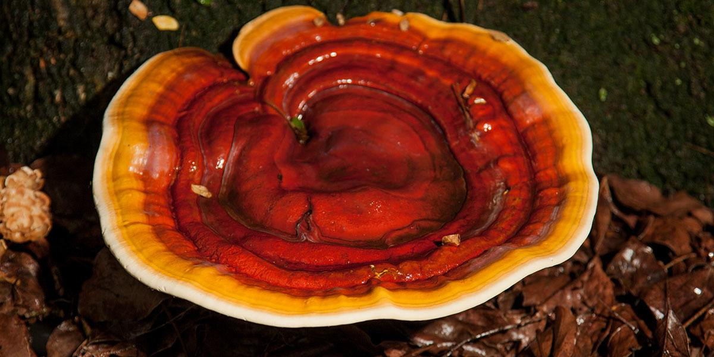

Reishi Facts!!
Reishi Facts!

This one is often considered the gold standard of medicinal mushrooms
it is a polypore which means that it is touch and cork like.
it grows on the sides of trees and it very touch to eat.
its rare in the wild but it is cultivated on the commerical scale.
its full use is not known but what we know so far is that it can treat fatigue, lower cholesterol, boost the immune system and lower blood pressure.
some have even claim that it helps fight HIV/AIDS which is awesome.